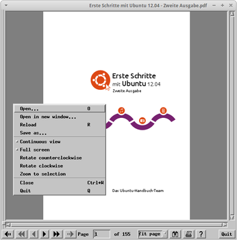

Xpdf
Dieser Artikel wurde für die folgenden Ubuntu-Versionen getestet:
Ubuntu 16.04 Xenial Xerus
Zum Verständnis dieses Artikels sind folgende Seiten hilfreich:
Xpdf  ist ein PDF-Betrachter für X-basierte Systeme, der die Programmbibliothek Motif nutzt. Dieser Klassiker ist schnell, schlank und vielseitig konfigurierbarer, wenn auch seine Oberfläche heute etwas altbacken wirkt und er nur in einer englischen Version bereitsteht. Das Programm steht unter der GPLv2-Lizenz .
ist ein PDF-Betrachter für X-basierte Systeme, der die Programmbibliothek Motif nutzt. Dieser Klassiker ist schnell, schlank und vielseitig konfigurierbarer, wenn auch seine Oberfläche heute etwas altbacken wirkt und er nur in einer englischen Version bereitsteht. Das Programm steht unter der GPLv2-Lizenz .
Als Reaktion auf die Kritik an Xpdf wurde das Poppler-Projekt abgespalten, das inzwischen die Basis für fast alle jüngeren grafischen PDF-Betrachter darstellt.
Installation¶
Achtung!
Xpdf aus den offiziellen Paketquellen ist defekt - siehe Problembehebung.
|  |
| Xpdf mit Kontextmenü |
Xpdf lässt sich über die Paketquellen installieren [1]:
xpdf (universe)
 mit apturl
mit apturl
Paketliste zum Kopieren:
sudo apt-get install xpdf
sudo aptitude install xpdf
Konfiguration¶
Zur Konfiguration von Xpdf kann in einem Editor [3] eine Konfigurationsdatei ~/.xpdfrc erstellt werden. Existiert keine solche Datei, sucht Xpdf in der Datei /etc/xpdf/xpdfrc nach Konfigurationseinstellungen. In der Datei ~/.xpdfrc im Homeverzeichnis lassen sich u.a. die Startposition des Xpdf-Fensters, die Hintergrundfarbe der PDF-Anzeige, das standardmäßige Starten im Vollbildmodus oder der Vergrößerungsfaktor beim Programmstart angeben.
Die genannten Optionen lassen sich auch direkt beim Aufruf des Programms über die Kommandozeile angeben [4]. Nähere Informationen und weitere Optionen finden sich in der Manpage.
Bedienung¶
Xpdf kann auch über den Aufruf von xpdf gestartet werden [2]. Außerdem wird das Programm ins Kontextmenü eingebunden. Wird also mit der rechten Maustaste  auf ein PDF-Dokument geklickt, steht die Auswahlmöglichkeit "Mit xpdf öffnen" zur Verfügung.
auf ein PDF-Dokument geklickt, steht die Auswahlmöglichkeit "Mit xpdf öffnen" zur Verfügung.
Xpdf verfügt über keine Menüzeile. Es wird gesteuert über grundlegende Tastaturkürzel, Buttons in der Fußzeile sowie das mit der rechten Maustaste aufrufbare Kontextmenü.
Eine besondere Fähigkeit bei xpdf ist, dass man Spalten, etwa in Tabellen oder im Zeitungssatz frei markieren kann, und dann auch nur den gerade markierten Text kopiert, und nicht wie sonst oft, an ganze Zeilen gebunden ist (siehe oben stehende Abbildung).
Die folgende Tabelle führt einige der Tastaturbefehle zur Steuerung von Xpdf auf:
| Tastaturbefehle | |
| Taste(n) | Funktion |
| O | Datei öffnen |
| F oder Strg + F | Suche |
| Strg + G | Sprung zum nächsten Suchergebnis |
| ↓ | Bildlauf runter |
| ↑ | Bildlauf hoch |
| N | Nächste Seite |
| P | Vorige Seite |
| G | Gehe zu SEITENNUMMER |
| + | Seitenansicht vergrößern |
| - | Seitenansicht verringern |
| Alt + F | Vollbildmodus |
| R | Datei neu laden (erfolgt automatisch, wenn die Datei seit dem Laden geändert wurde) |
| Q | Xpdf beenden |
Weitere Befehle finden sich in der Manpage.
Problembehebung¶
Die Version von Xpdf aus den offiziellen Paketquellen stürzt reproduzierbar ab. Abhilfe schafft die Installation und Nutzung einer vorkompilierten Binärversion von der Projektseite  .
.
 Übersichtsseite
Übersichtsseite- Erstellt mit Inyoka
-
 2004 – 2017 ubuntuusers.de • Einige Rechte vorbehalten
2004 – 2017 ubuntuusers.de • Einige Rechte vorbehalten
Lizenz • Kontakt • Datenschutz • Impressum • Serverstatus -
Serverhousing gespendet von